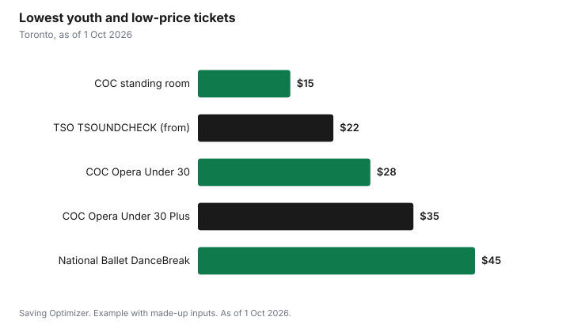

Entertainment · Canada
Opera, Ballet and Symphony Tickets for Under 35 in Canada: $15 to $45 Seats
If you are 35 or under, you can see opera, ballet and the symphony in Toronto for $15 to $45 a ticket through programs run by the companies themselves. The Toronto Symphony Orchestra's TSOUNDCHECK, for ages 15 to 35, has tickets from $22. The National Ballet of Canada's DanceBreak offers $45 seats to anyone 35 and under. The Canadian Opera Company's Opera Under 30 tickets cost $28, or $35 for a seat that may be upgraded on the night, and anyone can buy one of about 60 standing-room tickets for $15. Bring photo ID, because every program checks age, and expect no refunds.
Key takeaways
- TSO TSOUNDCHECK (15 to 35): tickets from $22.
- National Ballet DanceBreak (35 and under): $45; both attendees must qualify.
- COC Opera Under 30: $28, or $35 with a possible free upgrade.
- COC standing room: about 60 tickets at $15 per show, in person from 11 a.m.
- Bring valid ID; most youth tickets cannot be exchanged or refunded.
- Example with made-up inputs: three shows for $110 instead of $375.
The programs at a glance
| Program | Who | Price | Key rules |
|---|---|---|---|
| TSO TSOUNDCHECK | Ages 15 to 35 | From $22 | Exchange with 48 hours' notice for $10, or return for a tax receipt |
| National Ballet DanceBreak | 35 and under | $45 | Limit two, both must qualify, ID, no exchanges or refunds |
| COC Opera Under 30 | Under 30 | $28 | $5 service charge online or by phone; ID; no exchanges or refunds |
| COC Opera Under 30 Plus | Under 30 | $35 | Free upgrade if available on the night |
| COC standing room | Anyone | $15 | About 60 per show; in person from 11 a.m.; limit two |
| COC Arts Worker | Arts workers | $30 | Check eligibility with the COC |
Toronto Symphony Orchestra: TSOUNDCHECK
TSOUNDCHECK is the TSO's program for ages 15 to 35, with tickets starting at $22. The TSO says it is free to sign up, and that you need to show proof-of-age ID at every performance; acceptable ID includes a driver's licence, passport, international student identity card or provincial health card. If you cannot make a concert, the TSO says you can contact Patron Services at least 48 hours before to exchange for another performance for a $10 per-ticket fee, or return the ticket for a tax receipt. If you will go to several concerts, the Pick 5 TSOUNDCHECK subscription lets you choose five or more Classics and Pops evening concerts from $27 a ticket on the Main Floor or $35 in the Mezzanine, with fee-free exchanges and 20% off extra single tickets.
National Ballet of Canada: DanceBreak
DanceBreak gives anyone 35 and under access to seats for $45. The National Ballet says both attendees must be 35 and under, tickets are emailed at purchase but you must bring valid ID as proof of age to the theatre, and there are no exchanges or refunds on unused tickets. Tickets are limited, so the company advises booking early to avoid disappointment. If you bring a friend over 35, they will need a regular ticket.
Canadian Opera Company: Under 30, rush and standing room
The COC's Opera Under 30 tickets cost $28. Opera Under 30 Plus tickets cost $35 and give you a chance of a free seat upgrade on the night if seats are available; upgrades are not guaranteed and not into the Grand Ring. Tickets bought online or by phone carry a $5 per-ticket service charge. You must show ID, or the tickets cannot be released and are not refundable, and there are no exchanges or refunds on unused tickets.
Anyone can try rush tickets. The COC says rush tickets go on sale online at coc.ca from 4 p.m. for evening performances and from noon for matinees, using the promo code COCRUSH, and in person from 11 a.m. at the Four Seasons Centre box office at 145 Queen St. W. Rush sales are final and limited to two per person. Standing room is the cheapest seat in the house: about 60 tickets for each performance at $15, sold only in person from 11 a.m. on the day, limited to two per person. You will stand for the whole performance, so wear comfortable shoes.
| Opera | Dates |
|---|---|
| La Traviata | 18 Sep to 17 Oct 2026 |
| Così fan tutte | 3 to 18 Oct 2026 |
| The Turn of the Screw | 23 Jan to 17 Feb 2027 |
| Ariadne auf Naxos | 4 to 20 Feb 2027 |
| Empire of Wild | 1 to 21 May 2027 |
| The Elixir of Love | 8 to 29 May 2027 |
Outside Toronto
Many orchestras, opera and ballet companies across Canada run similar programs for students and young adults, sometimes with a free membership sign-up. Search your local company's site for words like "under 30", "under 35", "student", "rush" or "youth". Rules vary, so check the age limit, ID rules and whether a guest must also qualify.
Making the most of youth pricing
Youth tickets work best when you plan around their limits. Because most are final sale, buy only for dates you are sure about, and put the performance in your calendar with a reminder to pack your ID. For sold-out operas, standing room and rush are your back-up: arrive at the box office near 11 a.m. on the day, or check online at the rush release time. If you age out soon, use the programs while you can; the TSO and National Ballet limits are 35 and under, while the COC's is under 30. Pair a youth ticket with a cheap dinner nearby, or eat before you go, so the night stays affordable.
Example with made-up inputs
These numbers are an example with made-up inputs. A 29-year-old wants to see one opera, one ballet and two symphony concerts this season. Regular tickets in similar seats would cost a made-up $125, $120 and $65 each, or $375. Using youth programs, she pays $33 for an Opera Under 30 ticket including the $5 service charge, $45 for DanceBreak, and $22 each for two TSOUNDCHECK concerts before any other ticketing fees. The total is $122, about a third of the regular price. If she switches the opera to a $15 standing-room ticket, the total drops to $104.
| Show | Regular (made up) | Youth program |
|---|---|---|
| Opera | $125 | $33 (Under 30 plus $5 charge) |
| Ballet | $120 | $45 (DanceBreak) |
| Two symphony concerts | $130 | $44 (TSOUNDCHECK from $22) |
| Total | $375 | $122 |

Steps
- Sign up for each company's youth program or newsletter.
- Check age rules and whether your guest must also qualify.
- Buy early for DanceBreak and Opera Under 30, which are limited.
- Try rush or standing room on the day for sold-out operas.
- Bring government photo ID to the theatre.
- Consider a youth subscription if you will see five or more concerts.
Common mistakes
- Forgetting ID and losing the ticket.
- Bringing an over-35 friend on a DanceBreak ticket.
- Buying a youth ticket you may not use when there are no refunds.
- Assuming rush tickets are guaranteed for every show.
More: subscriptions versus single tickets and cheaper Nutcracker and holiday concerts.
Sources
- Canadian Opera Company, Opera Under 30, Rush Tickets and 2026/27 season, coc.ca, as of 1 Oct 2026.
- National Ballet of Canada, DanceBreak, national.ballet.ca, as of 1 Oct 2026.
- Toronto Symphony Orchestra, TSOUNDCHECK and Exchanges and Returns, tso.ca, as of 1 Oct 2026.
- Regular ticket prices in the example are made-up inputs.
Frequently asked questions
How much are COC Opera Under 30 tickets?
$28, or $35 for Opera Under 30 Plus with a chance of a free upgrade on the night. Online and phone orders add a $5 per-ticket service charge.
What is National Ballet DanceBreak?
$45 seats for anyone 35 and under. Both attendees must be 35 and under, ID is required and there are no exchanges or refunds.
How much are TSO TSOUNDCHECK tickets?
Tickets for ages 15 to 35 start at $22.
How do COC standing room tickets work?
About 60 tickets per performance cost $15, sold in person only from 11 a.m. on the day, limited to two per person.
How do I buy COC rush tickets?
Online at coc.ca with promo code COCRUSH from 4 p.m. for evening shows and noon for matinees, or in person from 11 a.m. Sales are final and limited to two.
Do I need ID for youth arts tickets?
Yes. The COC, National Ballet and TSO programs all require proof of age.
Researched and drafted with AI assistance and fact-checked against official Canadian sources. How we create content.
Disclosure: Saving Optimizer may earn a commission if a partner link is added later, such as a ticketing offer type. No partnership is claimed on this page. Education only.